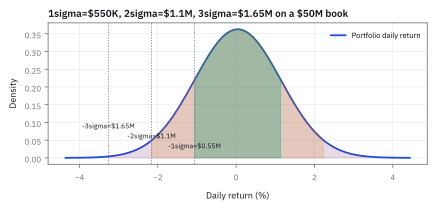

1.9 The Normal (Gaussian) Distribution and Quantile-Quantile (QQ) Diagnostics
Normal ใช้แค่ค่าเฉลี่ยกับความผันผวนก็คำนวณโอกาสได้ทุกช่วง ส่วน QQ plot บอกว่าข้อมูลจริงหลุดออกจากมันตรงไหน
พอร์ตหุ้นมูลค่า \$50 ล้าน แบบจำลองความเสี่ยงให้ผลตอบแทนรายวันเป็น Normal ค่าเฉลี่ย 0.04% ความผันผวน 1.10% ต่อวัน (ตัวเลขสมมติ) รายงานบอกว่าวันที่ขาดทุนเกิน 2% จะเกิดราว 8 วันต่อปี ผู้จัดการพอร์ตถามว่า “ถ้าอย่างนั้นขาดทุนเกิน 4% ก็น่าจะราว 4 วันต่อปีใช่ไหม”
ลองตอบก่อนเปิดเฉลย
ไม่ใช่ ภายใต้ Normal นี้ ขาดทุนเกิน 4% มีโอกาส 0.012% ต่อวัน หรือราว 0.03 วันต่อปี (เฉลี่ยครั้งเดียวในราว 33 ปี) หายากกว่าขาดทุนเกิน 2% ถึง 265 เท่า ไม่ใช่สองเท่า หางของ Normal บางลงเร็วมาก และนี่คือเหตุผลที่ต้องตรวจว่าหางของข้อมูลจริงบางแบบนั้นหรือไม่ ซึ่งข้อมูลหุ้นจริงมักไม่บาง
ภาพรวมก่อนลงสูตร
Normal (หรือ Gaussian) คือเส้นระฆังที่สมมาตรรอบค่าเฉลี่ย $\mu$ และมีความกว้างกำหนดด้วย standard deviation $\sigma$ จุดแข็งของมันคือ Normal ทุกตัวเป็น Normal มาตรฐานตัวเดียวกันที่ถูกเลื่อนและยืด เราจึงตอบคำถามโอกาสทุกข้อได้ด้วยตาราง (หรือ function) เดียว และพื้นที่รอบค่าเฉลี่ยก็มีตัวเลขจำง่าย: ±1σ ครอบคลุม 68% ±2σ ครอบคลุม 95% ±3σ ครอบคลุม 99.7%
จุดอ่อนอยู่ที่หาง density ของ Normal ลดลงแบบ $e^{-z^2/2}$ ซึ่งเร็วมาก ทุกครั้งที่ขยับออกไปอีกหนึ่ง σ ในหางไกล โอกาสลดลงหลายสิบเท่า ข้อมูลผลตอบแทนหุ้นจริงมีวันสุดโต่งบ่อยกว่านั้น ถ้าใช้ Normal โดยไม่ตรวจ ตัวเลขความเสี่ยงหางจะต่ำเกินจริง
หน้านี้จึงมีสองครึ่ง ครึ่งแรกใช้ Normal คำนวณโอกาสขาดทุน จำนวนวันต่อปี และ VaR ของพอร์ต \$50 ล้าน พร้อมเหตุผลว่าทำไมหางบางขนาดนั้น ครึ่งหลังสร้างที่มาของเส้นระฆังและเลข 3 ของ kurtosis แล้วใช้ QQ plot กับข้อมูลจริงตรวจว่าสมมติฐานนี้พังตรงไหน
รูป — พื้นที่รอบค่าเฉลี่ยของ Normal
ศัพท์ที่ใช้ในหน้านี้
- Normal มาตรฐาน และ z-score
- Normal มาตรฐาน $Z$ มีค่าเฉลี่ย 0 และ variance 1 ส่วน z-score $z=(x-\mu)/\sigma$ บอกว่าค่าหนึ่งห่างจากค่าเฉลี่ยกี่ σ ใช้แปลงคำถามของ Normal ใด ๆ ไปอ่านจากตารางเดียว
- $\phi$ และ $\Phi$
- $\phi$ คือ density ของ Normal มาตรฐาน $\Phi$ คือ CDF ของมัน ($\Phi(z)=P(Z\le z)$) ตัวเล็กให้ความสูง ตัวใหญ่ให้พื้นที่ทางซ้าย
- quantile และ VaR
- quantile คือการกลับทิศของ CDF: หาค่าบนแกนที่ทำให้พื้นที่ทางซ้ายเท่ากับโอกาสที่กำหนด VaR 99% คือ quantile 1% ของผลตอบแทน แปลงเป็นจำนวนเงินขาดทุน
- QQ plot
- กราฟที่จับคู่ข้อมูลที่เรียงลำดับแล้วกับ quantile ของแบบจำลองที่อันดับเดียวกัน ถ้าข้อมูลมาจากแบบจำลองนั้น จุดจะเรียงเป็นเส้นตรง ใช้ดูว่าข้อมูลหลุดตรงกลางหรือที่หาง
- kurtosis
- ค่าเฉลี่ยของ $(X-\mu)^4$ หารด้วย $\sigma^4$ Normal มีค่า 3 พอดี ค่าที่มากกว่า 3 บ่งว่ามีค่าสุดโต่งบ่อยกว่า Normal (หางหนา) ค่านี้ลบ 3 เรียกว่า excess kurtosis
- heavy tails (หางหนา)
- distribution ที่โอกาสในหางไกลลดลงช้ากว่า Normal เช่นลดแบบกำลังของระยะทาง เป็นลักษณะที่พบเสมอในผลตอบแทนรายวันของสินทรัพย์จริง
สัญลักษณ์
| สัญลักษณ์ | ความหมาย | หน่วย |
|---|---|---|
| $\mu,\ \sigma$ | ค่าเฉลี่ยและ standard deviation ของผลตอบแทน | ต่อวัน (ทศนิยม) |
| $N(\mu,\sigma^2)$ | Normal ที่มีค่าเฉลี่ย $\mu$ และ variance $\sigma^2$ (ตัวที่สองคือ variance ไม่ใช่ σ) | |
| $\phi,\ \Phi,\ \Phi^{-1}$ | density, CDF และ quantile function ของ Normal มาตรฐาน | |
| $p_2,\ p_4$ | โอกาสขาดทุนเกิน 2% และ 4% ในหนึ่งวัน | โอกาส |
| $r_{(i)},\ z_i$ | ผลตอบแทนอันดับที่ $i$ หลังเรียงจากน้อยไปมาก และ quantile ของ Normal มาตรฐานที่อันดับเดียวกัน | %, ไม่มีหน่วย |
ขั้นที่ 1 — ทุก Normal คือ Normal มาตรฐานที่เลื่อนและยืด
density ของ Normal มีสูตรเดียวที่มีพารามิเตอร์สองตัว ถ้าเขียน $X=\mu+\sigma Z$ โดย $Z$ เป็น Normal มาตรฐาน ทุกคำถามของ $X$ แปลงกลับไปเป็นคำถามของ $Z$ ได้ด้วยการลบค่าเฉลี่ยแล้วหารด้วย σ
สูตรบรรทัดแรกบอกว่า density ขึ้นกับ $x$ ผ่านระยะห่างจากค่าเฉลี่ยยกกำลังสองหารด้วย variance เท่านั้น เส้นจึงสมมาตรและมีรูปทรงเดียวกันเสมอ ต่างกันแค่ตำแหน่งและความกว้าง บรรทัดที่สี่คือเหตุผลที่ใช้ตารางเดียวได้: เหตุการณ์ $X\le x$ เป็นเหตุการณ์เดียวกับ $Z\le(x-\mu)/\sigma$ บรรทัดที่ห้าใช้ความสมมาตร $\Phi(-k)=1-\Phi(k)$ ตัวเลข 68% จึงเป็นพื้นที่รวมสองข้างของค่าเฉลี่ย ไม่ใช่ข้างเดียว และใช้ได้เฉพาะเมื่อ distribution เป็น Normal จริง การคำนวณ z-score ได้ไม่ได้ทำให้ข้อมูลกลายเป็น Normal
ขั้นที่ 2 — โอกาสขาดทุนเกิน 2% และจำนวนวันต่อปี
กลับมาที่พอร์ต \$50 ล้าน: $\mu=0.0004$ และ $\sigma=0.011$ ต่อวัน ใช้ 252 วันซื้อขายต่อปี (จำนวนวันทำการโดยประมาณของตลาดหุ้นสหรัฐ) ต้องลบค่าเฉลี่ยก่อนหารด้วย σ แล้วอ่านพื้นที่ทางซ้าย
ขาดทุน 2% อยู่ห่างค่าเฉลี่ย 1.85 σ (ไม่ใช่ 2/1.1 = 1.82 σ เพราะค่าเฉลี่ยเป็นบวก ระยะไปถึง −2% จึงไกลขึ้นอีก 0.04%) โอกาส 3.18% ต่อวันคูณ 252 วันได้ค่าเฉลี่ย 8.02 วันต่อปี การคูณนี้ให้ค่าเฉลี่ยได้เลยเพราะค่าเฉลี่ยของผลรวมคือผลรวมของค่าเฉลี่ย แต่ไม่ได้รับประกันว่าทุกปีจะเจอ 8 วัน
ขั้นที่ 3 — ขยับเกณฑ์เป็น 4%: หางบางลงเร็วแค่ไหน
คำถามของผู้จัดการพอร์ตคือถ้าเกณฑ์ขาดทุนเพิ่มสองเท่า ความถี่ลดลงครึ่งเดียวหรือไม่ ทำขั้นตอนเดิมกับเกณฑ์ 4%
เกณฑ์เพิ่มสองเท่า แต่โอกาสลดลง 265 เท่า เพราะการขยับจาก 1.85 σ ไป 3.67 σ ผ่านช่วงที่ density ลดลงแบบ $e^{-z^2/2}$ ซึ่งยิ่งไกลยิ่งลดเร็ว ตัวเลข 33 ปีคือเวลารอเฉลี่ยถ้าแต่ละวันอิสระกันและโอกาสคงที่ ไม่ได้แปลว่าวันแบบนี้จะเว้นระยะ 33 ปีพอดี และไม่ใช่การพยากรณ์ตลาดจริง แต่เป็นตัวเลขที่บอกว่าแบบจำลองเชื่ออะไร
รูป — โอกาสขาดทุนเกินเกณฑ์ บนแกนตั้งแบบ log
ขั้นที่ 4 — ย้อนจากโอกาส 1% ไปเป็น VaR 99%
ฝ่ายความเสี่ยงไม่ได้ถามโอกาสของเกณฑ์ที่กำหนด แต่ถามกลับทิศ: “ขาดทุนระดับไหนที่มีโอกาสเกินเพียง 1% ต่อวัน” คำตอบคือ quantile 1% ของผลตอบแทน แปลงเป็นเงินขาดทุนที่รายงานเป็นจำนวนบวก
บรรทัดที่สามคือการเลื่อนและยืดจากขั้นที่ 1 ใช้ในทิศกลับ: quantile ของ $X$ คือ $\mu$ บวก σ คูณ quantile ของ $Z$ VaR 99% หนึ่งวันจึงราว \$1.26 ล้าน ความหมายคือในวันทั่วไป มีโอกาส 1% ที่ขาดทุนเกินจำนวนนี้ VaR ไม่ใช่ขาดทุนสูงสุด และไม่ได้บอกว่าในวันที่เกินแล้วขาดทุนเฉลี่ยเท่าไร คำถามหลังเป็นงานของ expected shortfall ใน VaR และ expected shortfall
รูป — VaR 99% คือขอบของหางซ้ายที่มีพื้นที่ 1%
ขั้นที่ 5 — ทำไมหาง Normal บางขนาดนั้น และตัวเลข 10−94
ถ้าอยากรู้ว่าหางไกล ๆ มีโอกาสเท่าไรโดยไม่ต้องเปิดตาราง มีค่าประมาณที่ทั้งง่ายและแม่น ได้จาก integration by parts กับ $\phi'(z)=-z\,\phi(z)$
integral ที่ลบออกในบรรทัดที่สองเป็นบวก ขอบบน $\phi(a)/a$ จึงเกินเสมอ และ integral นั้นไม่เกิน $P/a^2$ จัดรูปจึงได้ขอบล่าง ที่ $a=3.67$ สองขอบหนีบค่าจริง 0.000120 ไว้แน่น บรรทัดที่ห้าคือหัวใจของ “หางบาง”: ทุกครั้งที่ขยับออกไปอีก 1σ density ถูกคูณด้วย $e^{-a-1/2}$ ที่ $a=2$ คือหารราว 12 ที่ $a=3$ คือหารราว 33 ยิ่งไกลยิ่งหารหนัก
บรรทัดสุดท้ายใช้กับวันที่ 19 ตุลาคม 1987 (Black Monday) ที่ดัชนี Dow Jones ลดลงราว 22.6% ในวันเดียว ถ้าใช้พารามิเตอร์ของพอร์ตนี้ การลดลงนั้นห่างค่าเฉลี่ย 20.6σ และมีโอกาสราว $2\times10^{-94}$ ซึ่งไม่ควรเกิดแม้รอนานกว่าอายุจักรวาลหลายเท่า แต่มันเกิดแล้ว ข้อสรุปจึงไม่ใช่ว่าตลาดทำสิ่งที่เป็นไปไม่ได้ แต่คือ Normal ที่ความผันผวนคงที่ใช้บรรยายหางไกลไม่ได้
ขั้นที่ 6 — ที่มาของรูประฆัง: นับลำดับหัวก้อย
เส้นระฆังไม่ได้ถูกเลือกมาเพราะสวย มันโผล่ขึ้นเองเมื่อรวมผลเล็ก ๆ อิสระจำนวนมาก ลองดูจำนวนหัวจากการทอยเหรียญยุติธรรม 100 ครั้ง ซึ่งเป็น Binomial ค่าเฉลี่ย 50 variance 25 แล้วเทียบความสูงของแท่งที่ห่างจากกลาง $k$ แท่งกับแท่งกลาง
ขั้นที่ใช้ประมาณคือ $\ln(1+u)\approx u$ เมื่อ $u$ เล็ก ซึ่งใช้ได้เมื่อ $k$ เล็กเทียบกับ 50 ผลรวมของเลขคี่ $1+3+\cdots+(2k-1)$ เท่ากับ $k^2$ พอดี เลขชี้กำลังจึงเป็นระยะห่างยกกำลังสอง และเมื่อเขียน $k$ เป็นจำนวนเท่าของ SD (5) จะได้ $e^{-z^2/2}$ ซึ่งคือรูปของ $\phi$ ผลตอบแทนรายวันก็เป็นผลรวมของการซื้อขายเล็ก ๆ จำนวนมาก นี่คือเหตุผลที่ Normal เป็นจุดเริ่มต้นที่สมเหตุสมผล ส่วนเงื่อนไขที่ทำให้ผลรวมเข้าใกล้ Normal จริงจะเรียนใน central limit theorem
รูป — ผลรวมที่ปรับหน่วยแล้วเข้าใกล้เส้นระฆัง

ขั้นที่ 7 — พื้นที่รวมเท่ากับหนึ่ง และเลข 3 ของ kurtosis
มีสองเรื่องที่ต้องพิสูจน์ก่อนใช้ $\phi$ อย่างมั่นใจ: ทำไมตัวหารต้องเป็น $\sqrt{2\pi}$ และทำไม Normal มี kurtosis เท่ากับ 3 ซึ่งจะเป็นเกณฑ์ตัดสินว่าข้อมูลจริงหางหนาหรือไม่ เรื่องแรกใช้เทคนิคยกกำลังสองแล้วเปลี่ยนเป็นพิกัดเชิงขั้ว เรื่องที่สองใช้ moment generating function (MGF)
ยกกำลังสองของพื้นที่เปลี่ยนปัญหาหนึ่งมิติเป็นพื้นที่ใต้ภูเขาสองมิติที่สมมาตรรอบจุดกำเนิด ในพิกัดเชิงขั้ว ชิ้นพื้นที่คือ $r\,dr\,d\theta$ และตัว $r$ ที่เพิ่มมานี้เองที่ทำให้ integral หาค่าได้ ($-e^{-r^2/2}$ คือ antiderivative) ส่วน MGF ได้มาจากการเติมกำลังสอง $tz-z^2/2=-(z-t)^2/2+t^2/2$ แล้ว integral ที่เหลือคือพื้นที่ใต้ Normal ที่เลื่อนไป ซึ่งเท่ากับหนึ่ง สัมประสิทธิ์ของ $t^m/m!$ ในอนุกรมคือ $\mathbb E[Z^m]$ จึงได้ variance 1 และ $\mathbb E[Z^4]=3$ เพราะ σ ของ $Z$ เป็น 1 kurtosis ของ Normal ทุกตัวจึงเท่ากับ 3
ขั้นที่ 8 — สร้าง QQ plot และอ่านจุดซ้ายสุดด้วยมือ
ทุกอย่างก่อนหน้านี้สมมติว่า Normal ถูก ตอนนี้ตรวจกับข้อมูลจริง: ผลตอบแทนรายวันของกองทุน SPY ปี 2024 จำนวน 252 วัน ค่าเฉลี่ย 0.0863% SD 0.7929% ต่ำสุด −2.98% histogram ดูหางยากเพราะแท่งที่หางมีข้อมูลน้อย QQ plot จึงเรียงข้อมูลแล้วจับคู่แต่ละตัวกับค่าที่ Normal คาดไว้ที่อันดับเดียวกัน
$p_i$ คือโอกาสสะสมที่จุดอันดับ $i$ “ควรจะ” อยู่ การลบ 0.5 ทำให้จุดแรกกับจุดสุดท้ายไม่ไปตกที่ 0 หรือ 1 ซึ่ง $\Phi^{-1}$ เป็นอนันต์ เส้นอ้างอิงมีจุดตัด $\mu$ และความชัน σ ไม่ใช่เส้น 45 องศา เพราะสองแกนใช้คนละหน่วย ผลคือวันที่แย่ที่สุดของปี (−2.98%) อยู่ใต้ค่าที่ Normal คาดไว้ที่อันดับนั้น (−2.20%) ราว 0.78 จุดเปอร์เซ็นต์ จุดเดียวยังตัดสินไม่ได้ เพราะจุดปลายสุดแกว่งมากตามธรรมชาติ ต้องดูทั้งแนว
รูป — QQ plot ห้าจุดของ SPY ปี 2024 เทียบกับเส้น Normal
ขั้นที่ 9 — อ่านรูปทรงของ QQ และวัดหางด้วย kurtosis
รูปแบบที่ควรจำคือ ถ้าข้อมูลหางหนากว่า Normal จุดจะเป็นรูปตัว S: ปลายซ้ายจมใต้เส้น ปลายขวาลอยเหนือเส้น ตรงกลางแบนกว่าเส้นเล็กน้อย เพื่อยืนยันด้วยตัวเลข ใช้ kurtosis ซึ่ง Normal มีค่า 3 จากขั้นที่ 7 แล้วคำนวณจากข้อมูลด้วย moment ตัวอย่าง
$m_2$ และ $m_4$ คิดในหน่วยเปอร์เซ็นต์ (เปอร์เซ็นต์กำลังสองและกำลังสี่) อัตราส่วนจึงไม่มีหน่วย ปี 2024 ซึ่งเป็นปีที่ค่อนข้างสงบให้ kurtosis 4.70 มากกว่า 3 และนับวันที่ต่ำกว่าค่าเฉลี่ยลบ 2 SD ได้ 9 วัน ทั้งที่ Normal คาดไว้ราว 5.7 วัน ข้อมูลระยะยาวชัดกว่านี้มาก: ผลตอบแทนรายวันปี 2001–2017 ให้ kurtosis ระหว่าง 5.7 ถึง 29.8 ในหุ้นห้าตัวในรูปด้านล่าง และแม้ขอบล่างของช่วงความเชื่อมั่นก็เกิน 3 ทุกตัว kurtosis ไวต่อค่าสุดโต่งมากเพราะยกกำลังสี่ ตัวเลขเดียวจึงใช้คู่กับ QQ plot ไม่ใช่แทนกัน
ข้อสังเกตเพิ่มเติมจากข้อมูลจริง: ผลตอบแทนรายสัปดาห์หรือรายเดือนมีหางใกล้ Normal มากกว่ารายวัน เพราะเป็นผลรวมของหลายวัน และหางหนาส่วนหนึ่งมาจากความผันผวนที่เปลี่ยนตามเวลา ช่วงตลาดปั่นป่วนกับช่วงสงบปนกันจนรวมแล้วหางหนา แบบจำลองที่จับเรื่องนี้คือ ARCH และ GARCH
รูป — QQ plot ของแบบจำลองหางหนา: รูปตัว S
รูป — kurtosis ของผลตอบแทนรายวันจริง ปี 2001–2017
ความผิดพลาดที่ให้คำตอบผิดแบบเงียบ ๆ
ใส่ σ แทน variance: $N(0.0004,\,0.011^2)$ มีพารามิเตอร์ตัวที่สองเป็น 0.000121 ถ้าเห็น $N(0,4)$ แล้วใช้ σ = 4 แทน σ = 2 ทุกโอกาสจะผิด เช่น $P(X\lt-4)$ จะได้ 15.9% แทนที่จะเป็น 2.28%
ลืมลบค่าเฉลี่ย: ใช้ $-0.02/0.011=-1.82$ แทน $-1.85$ ได้โอกาสขาดทุนเกิน 2% เป็น 3.45% แทน 3.18% ผิดไปราว 8% ของตัวเลข และผิดมากขึ้นเมื่อค่าเฉลี่ยใหญ่ เช่นในผลตอบแทนรายปี
ใช้ 68% เป็นโอกาสข้างเดียว: ช่วง ±1σ มี 68.3% รวมสองข้าง โอกาสต่ำกว่า $\mu-\sigma$ คือ 15.9% ไม่ใช่ 32%
คิดว่า Normal VaR ต่ำกว่าความจริงทุกระดับเสมอ: เมื่อเทียบที่ variance เท่ากัน distribution หางหนามีโอกาสเกิน 1.85σ เพียง 2.44% (ต่ำกว่า Normal ที่ 3.18%) แต่เกิน 4σ มากกว่า Normal เกือบ 100 เท่า CDF สองเส้นตัดกัน หางหนาจึงเพิ่มความเสี่ยงเฉพาะที่หางไกล
คำนวณ $1-\Phi(a)$ ด้วยคอมพิวเตอร์ที่หางไกล: เมื่อ $a$ ใหญ่ $\Phi(a)$ ปัดเป็น 1.0 พอดีในเลข floating point ผลลบจึงเป็นศูนย์ทั้งที่ค่าจริงคือ $10^{-94}$ ให้ใช้ $\Phi(-a)$ หรือค่าประมาณ $\phi(a)/a$ แทน
ใช้ทำอะไรบนโต๊ะจริง
Normal คือภาษากลางของงานความเสี่ยง: VaR แบบ parametric, ช่วงความเชื่อมั่นของค่าประมาณ, z-score ของสัญญาณ และราคาของ option ใน สูตร Black–Scholes ล้วนเริ่มจาก $\Phi$ งานที่ต้องทำคู่กันเสมอคือตรวจหาง: วาด QQ plot ของผลตอบแทน นับวันที่เกินเกณฑ์เทียบกับที่ Normal คาด (ตรวจแบบเป็นระบบใน VaR backtesting) และทำ stress test กับเหตุการณ์แบบ Black Monday ที่แบบจำลองบอกว่าเกิดไม่ได้
โจทย์ตรวจความเข้าใจ
1. พอร์ตเดิมลดขนาดเหลือ \$25 ล้าน แต่ distribution ของผลตอบแทนเท่าเดิม โอกาสขาดทุนเกิน 2% และ VaR 99% เปลี่ยนอย่างไร แล้วโอกาสขาดทุนเกิน \$1 ล้านเป็นเท่าไร
เฉลย
โอกาสขาดทุนเกิน 2% ยังเป็น 3.18% เพราะเกณฑ์เป็นเปอร์เซ็นต์และ distribution ไม่เปลี่ยน VaR เป็นเงินลดครึ่งเป็น $\$25{,}000{,}000\times0.02519\approx\$629{,}746$ ส่วน \$1 ล้านคือ 4% ของพอร์ตใหม่ (เดิมคือ 2%) โอกาสจึงเป็น $p_4\approx0.012\%$ ไม่ใช่ 3.18% ต้องแปลงเกณฑ์เงินเป็นเปอร์เซ็นต์ก่อนทุกครั้ง
2. หาช่วงผลตอบแทนรายวันที่สมมาตรรอบค่าเฉลี่ยและครอบคลุม 95% สำหรับพอร์ตนี้
เฉลย
ต้องการ $2\Phi(k)-1=0.95$ จึง $\Phi(k)=0.975$ และ $k=1.96$ ช่วงคือ $0.04\%\pm1.96\times1.10\%=0.04\%\pm2.156\%$ หรือ −2.116% ถึง +2.196% ตรวจ: แต่ละหางเหลือ 2.5% รวม 5%
3. ทอยเหรียญยุติธรรม 100 ครั้ง โอกาสได้หัวตั้งแต่ 60 ครั้งเป็นเท่าไร ใช้ Normal ประมาณ แล้วเทียบกับค่าจริง 2.844%
เฉลย
ค่าเฉลี่ย 50 SD 5 จำนวนหัวเป็นจำนวนเต็ม แท่ง 60 กินพื้นที่ 59.5 ถึง 60.5 จึงเริ่มที่ 59.5 (continuity correction): $1-\Phi\big(\tfrac{59.5-50}{5}\big)=1-\Phi(1.9)\approx2.872\%$ ใกล้ค่าจริง 2.844% ถ้าเริ่มที่ 60 ตรง ๆ จะได้ $1-\Phi(2)\approx2.275\%$ ต่ำไปเกือบ 20% เพราะตัดครึ่งแท่งของ 60 ทิ้ง
คำนวณซ้ำด้วย JavaScript
เปิดดูโค้ด
const phi = z => Math.exp(-z * z / 2) / Math.sqrt(2 * Math.PI);
function Phi(z) { // Simpson integration, fine for |z| < 8
const n = 10000, h = Math.abs(z) / n;
let s = 0;
for (let i = 0; i <= n; i++) s += (i === 0 || i === n ? 1 : i % 2 ? 4 : 2) * phi(i * h);
return 0.5 + Math.sign(z) * h * s / 3;
}
function quantile(p) { // invert Phi by bisection
let lo = -8, hi = 8;
for (let i = 0; i < 70; i++) { const m = (lo + hi) / 2; if (Phi(m) < p) lo = m; else hi = m; }
return (lo + hi) / 2;
}
const mu = 0.0004, sd = 0.011;
const p2 = Phi((-0.02 - mu) / sd), p4 = Phi((-0.04 - mu) / sd);
console.log(p2, 252 * p2, p4, p2 / p4); // 0.0318 8.02 0.00012 265
console.log(-50e6 * (mu + sd * quantile(0.01))); // 1259491
console.log([1, 2, 3].map(k => 2 * Phi(k) - 1)); // 0.683 0.954 0.997
const a = (0.04 + mu) / sd;
console.log(a * phi(a) / (a * a + 1), phi(a) / a); // bounds around p4
const bm = (0.226 + mu) / sd;
console.log(bm, phi(bm) / bm); // 20.58 2.0e-94
console.log(quantile(0.5 / 252)); // -2.881, first QQ point
console.log(0.086302 + 0.792855 * quantile(0.5 / 252)); // -2.198 (%)
console.log(252 * Phi(-2)); // 5.73 days
console.log(1 - Phi(1.9), 1 - Phi(2)); // 0.0287 0.0228สิ่งที่ควรตอบได้หลังอ่าน
- ทุก Normal คือ $\mu+\sigma Z$ จึงตอบทุกคำถามได้ด้วย $\Phi\big((x-\mu)/\sigma\big)$ และช่วง ±1, 2, 3σ มีพื้นที่ 68.3%, 95.4%, 99.7%
- พอร์ต \$50 ล้านตัวอย่างมีโอกาสขาดทุนเกิน 2% ราว 3.18% (8 วันต่อปี) แต่เกิน 4% เพียง 0.012% หายากกว่า 265 เท่า เพราะหางลดแบบ $e^{-z^2/2}$
- VaR 99% หนึ่งวันคือ $-(\mu+\sigma\Phi^{-1}(0.01))$ คูณมูลค่าพอร์ต ราว \$1.26 ล้าน เป็นขอบ ไม่ใช่ขาดทุนสูงสุด
- Normal มี kurtosis เท่ากับ 3 ซึ่งได้จาก MGF $e^{t^2/2}$ ข้อมูลรายวันจริงให้ 4.7 ถึง 29.8
- QQ plot ของข้อมูลหางหนาเป็นรูปตัว S: ปลายซ้ายจมใต้เส้น ปลายขวาลอยเหนือเส้น
Normal ใช้กับผลตอบแทนได้ แต่ใช้กับราคาโดยตรงไม่ได้ เพราะราคาติดลบไม่ได้และผลตอบแทนทบต้นแบบคูณกัน หน้าถัดไป Lognormal distribution แก้เรื่องนี้ด้วยการให้ log ของราคาเป็น Normal